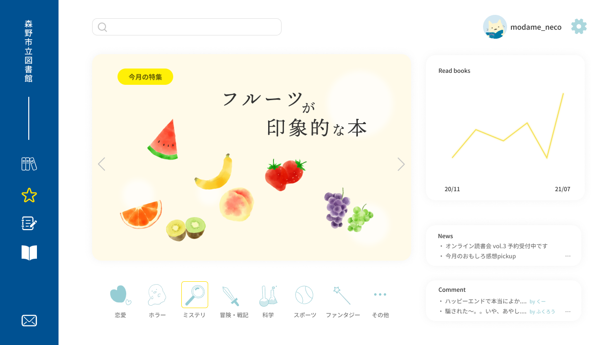

特長
本の貸出・予約ができるのに加え、オンラインならではの記録機能や感想の共有など、さらにお楽しみいただけます。
豊富な本の種類
出版社と提携し、最新の本も含め様々なジャンルの電子書籍が常時2000冊以上。
また、リクエストも可能ですのでぜひご利用ください。
今後は森野市の郷土資料など貴重な本についても電子化を予定しています。
楽しい読書記録
一冊ごとの日付や感想メモ、また評価をつけることができます。
また、読書メモは公開設定が可能です。
他の人がどんな感想を持ったのか、また気づかなかった点などを共有して楽しみましょう。

独自システムからの
おすすめ
読書記録から、システムがおすすめを選びます。
また、かんたんな気分バラメーターをチェックいただくことで、
気分に合わせた本をピックアップします。